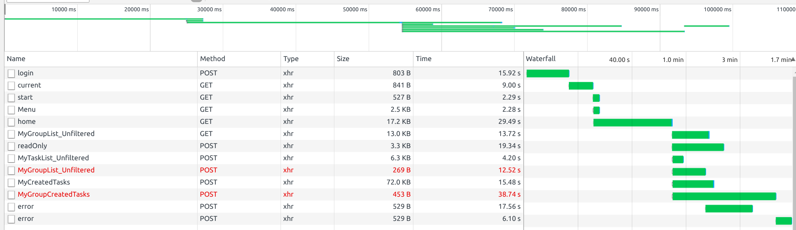

Results of performance test
Initial goal is running 15 UP / 300 TC1 CUPQ spread in 1 hour of time.
Running for a shorter time first to see how it goes: 5 UP / 100 TC1 in 20 minutes.

- Load average on CRM box: 96 ... and discovering that dev12's CRM box has only 2 vCPU (like devint01).
- To support that load, we should therefor have a cluster of minimum 48 load balanced m3.large (current type) instances.
- Some processed were killed or denied to launch because of OOM (Out Of Memory).
Errors encountered:
- ssh connection closed (Linux Kernel reclaiming memory).
$ top: Cannot allocate memory(also with "ls").- Login in while test is run creates failed requests and take 1.6 minutes: 
- In JMeter results: many failed requests.
On database server:
CPU load increased, but in a very manageable way.
However, the network bandwidth (out) reached 10Mb/s for several minutes!
Analysis of MySQL slow query log:
Indexes will have to be created in order to improve the various queries involved.
17 individual queries are not
Top slowest query:
# Attribute pct total min max avg 95% stddev median
# ============ === ======= ======= ======= ======= ======= ======= =======
# Count 6 227
# Exec time 69 15496s 661ms 121s 68s 107s 40s 80s
# Lock time 0 2s 0 383ms 8ms 46ms 37ms 167us
# Rows sent 0 226 0 1 1.00 0.99 0.07 0.99
# Rows examine 13 15.48M 0 70.57k 69.81k 68.96k 4.57k 68.96k
# Query size 8 130.13k 587 587 587 587 0 587
# Query_time distribution
# 10ms
# 100ms ################
# 1s ####
# 10s+ ################################################################
SELECT COUNT(ql.id) AS results FROM suitecrm.aos_products_quotes ql
JOIN addresses_aos_products_quotes aql ON aql.aos_products_quote_id = ql.id
JOIN addresses a ON a.id = aql.address_id
WHERE a.address_street = '' AND a.address_number = ''
AND ql.parent_type = 'AOS_Contracts'
AND ql.product_type_c != '' AND ql.product_type_c IN ('ELEC', 'GAS')
AND ql.deleted = 0 AND ql.contract_line_status_c IN ('ACTIVE', 'TO BE ACTIVATED', 'WAITING FOR START DATE')
Profiling the CRM
Result from profiling a heavy request (CUPQ (32.52 seconds)):
| Function | # Calls | Incl. Wall Time (microsec) | IWall% |
|---|---|---|---|
| mysqli_query | 452 | 22,504,615 | 69.2% |
| SuiteCRM\FLW_Flows\Response\Model::getFields | 106 | 2,536,059 | 7.8% |
| SoapClient::__doRequest | 1 | 1,875,710 | 5.8% |
| spl_autoload_call | 461 | 1,565,391 | 4.8% |
| preg_grep | 107 | 1,389,875 | 4.3% |
| strpos | 12,143 | ||
| to_html | 4,418 | ||
| array_search | 4,411 | ||
| strcmp | 4,313 | ||
| count | 2,868 | ||
| htmlentities | 1,814 | ||
| preg_match | 1,604 |
Result from profiling a baseline request (health ping (61ms)):
| Function | # Calls | Incl. Wall Time (microsec) | IWall% |
|---|---|---|---|
| load::entryPoint.php | 1 | 30,182 | 49.8% |
| MonologLogger::__construct | 1 | 9,212 | 15.2% |
| spl_autoload_call | 116 | 8,307 | 13.7% |
| SuiteCRM\Api\Core\RouteLoader::configureRoutes | 1 | 4,650 | 7.7% |